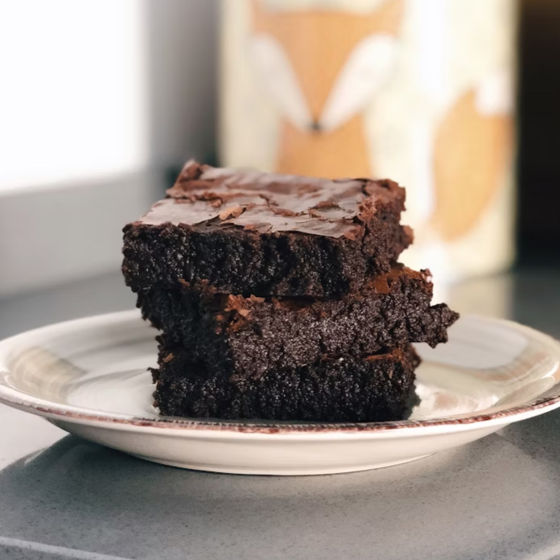

Protein Brownies

Description
This is a high-protein and low-calorie recipe for brownies you can make at home. It is great
if you want to cut down fat and build muscle, while enjoying the taste of a traditional brownie
with a hint of banana.
Ingredients
- Bananas x2 (~118g each)
- Eggs x2 (~57g each)
- Greek yoghurt (100g)
- Protein powder (1 scoop)
- Baking powder (2 tsp)
- Cocoa powder (4 tbsp)
- Monk fruit sugar (50g)
Steps
- Pre-heat oven to 200 degrees celsius.
- Get a mixing bowl and mash bananas in the bowl until goey.
- Add greek yoghurt and eggs to the bowl, then whisk until liquidy.
- Add protein powder, baking powder, cocoa powder, and monk fruit sugar to the bowl, then whisk until no longer clumpy.
- Get a metal tray and coat it with a thin coating of butter.
- Pour the bowl into the mixing tray, then place the tray in the oven.
- Wait 30 minutes, remove the tray from the oven, then allow brownies to rest for 10 minutes.
Home